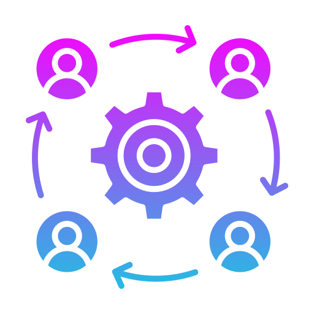
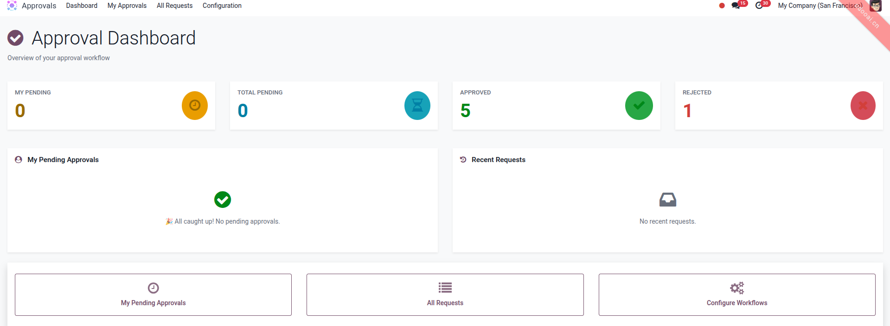

🔄 Dynamic Approval Levels
Configurable approval levels for each model with unlimited stages.
📋 Approval for All Models
Configure approval for any model from default Odoo or third party modules.
🔍 Domain Filtering
Apply approval only for selected records using domain filter.
🏢 Multi-Company Support
Full multi-company support with company-specific record rules.
👥 Flexible Approvers
Set approvers by specific user, user group, dynamic field, or manager.
⚙️ Easy Configuration
No technical skill needed. Just configure from UI.
📝 Complete Audit Trail
Track every approval action with timestamp and comments.
🔔 Auto Notifications
Automatically notify requester when request is approved or rejected.
Beautiful real-time dashboard built with OWL framework to monitor all approval activities at a glance.

Stats Overview
See pending, approved, and rejected counts in real-time stat cards.
My Pending Approvals
View all requests waiting for your approval in one place.
Quick Approve
Approve requests directly from the dashboard without opening the document.
Recent Activity
Track recent approval requests and navigate to them with one click.
Sequential Approval
Stages are processed one by one in order. The next stage starts only after the current one is approved.
Parallel Approval
All stages are processed simultaneously. Approval completes when all stages are approved.
Specific User
Select a specific user as the approver for each stage.
User Group
Any member of the group can approve, or require all members to approve.
Dynamic Field
Approver is taken from a field in the source document (e.g., responsible user).
Requester's Manager
Automatically set to the manager from HR hierarchy.
Step 1: Create a workflow in the Approvals menu and select the target model.
Step 2: Choose approval mode: Sequential or Parallel.
Step 3: Add approval stages with approver type and settings.
Step 4: On the document, click the "Request Approval" button.
Step 5: Approvers approve or reject from the document, or quick-approve from the dashboard.
Approval User: Submit approval requests, view own requests, cancel own requests.
Approver: Approve or reject assigned requests, delegate approval to another user.
Approval Manager: Manage all workflows and requests, full access to configuration, view all requests across the system.
Require All Group Members
All members of the approver group must approve before proceeding to the next stage.
Delegation
Approvers can delegate their approval task to another user with comments.
Escalation
Auto-escalate overdue requests to an escalation contact after configurable hours.
Callback Methods
Execute custom methods on the source document when approved or rejected (e.g., auto-confirm order).
Self-Approval Control
Configure whether the requester is allowed to approve their own request.
Rejection Reason Required
Optionally require approvers to provide a reason when rejecting a request.
Reset to Draft
Rejected or cancelled requests can be reset to draft and resubmitted.
Approval Progress
Track approval progress percentage on the source document in real-time.
Out of the box, this module includes a complete approval integration for Sale Orders as a working example.
Approval Buttons on Sale Order
Request Approval, Approve, Reject, Cancel, and Delegate buttons directly on the Sale Order form.
Status Banners
Visual status banners (Pending / Approved / Rejected) displayed on top of the Sale Order.
Approval Badge on List View
Approval status badge shown on both Quotation and Sales Order list views.
View Source Document
Navigate directly from the approval request to the original Sale Order with one click.
Integrate with any Odoo model using simple mixin inheritance:
class SaleOrder(models.Model):
_inherit = ["sale.order", "sm.approval.mixin"]
_name = "sale.order"
_approval_model = "sale.order"
def _on_approval_complete(self, request):
"""Called when all approval stages are completed."""
self.message_post(body="Approval workflow completed!")
def _on_approval_rejected(self, request):
"""Called when the approval request is rejected."""
self.message_post(body="Approval request was rejected.")